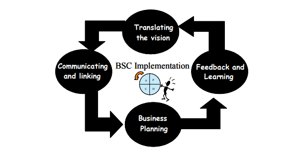

Up to now, this book has shown readers the important components in formulating a successful strategy and good decision-making processes. Now imagine the challenge of implementing a strategy formulated in a company such as Microsoft, with subsidiaries in many countries and a legion of collaborators! How can one ensure that the strategy not be lost in the implementation? This chapter intends to touch on issues related to the strategic alignment of the organization to effectively implement the outlined strategy, as well as the elements, which are important to developing performance measurement systems to monitor and measure the results obtained from the strategy in process.
Unfortunately, often the response to these questions is “no”. This happens because the process of formulating and implementing strategy is very slow and it is carried out in isolation by the highest levels of administration, so that it is lost in the day-to-day operations of the organization. Mintzberg (1994) stresses that planning cannot be dissociated from action, and requires the involvement of the entire organization, while also warning of three fallacies of strategic planning: prediction is possible; detachment, i.e., the separation of the strategist from the objects of strategy; and the strategic planning process can be formalized.
These three fallacies help to dissociate strategic planning from strategic thinking. They lead to bureaucratic decision-making processes. What should be a support tool to facilitate human thinking could become a straight jacket, an arbitrary formalization. Mintzberg and Waters (1985) give more emphasis to an organization’s actions than its systematized plans and goals. These plans are created by top management or consultants and are called intentional strategies.
However, there is another pattern of strategic action that occurs in the absence of intentions called emergent strategies. Theses strategies result from threats and opportunities, which are in the course of everyday work life and demand responses from those managers who have the task of executing the organization’s strategy. Any process that does not take into account intentional as well as emerging strategies will dissociate strategy from action, resulting in a lack of alignment.
Various authors emphasize the need for change in the process of formulating and implementing strategy in the face of ever more rapid changes in the competitive environment (Christensen, 1997; Eisenhardt & Browns, 2000; Eisenhardt & Sull, 2001).
Eisenhardt and Browns (2000) researched top management teams at a dozen companies in the Silicon Valley, trying to identify the strategic decision-making process, especially in turbulent markets. At a second stage of research, another 12 companies were studied, six leaders and six followers from different European, Asian, and North American origins.
In both research phases, the differences between the strategic decision-making processes used by the more efficient and less efficient companies were clear. Successful strategies are the result of decision-making processes in which executives develop collective intuition, stimulate constructive conflict, maintain the pace of decisions and avoid petty politicking, making rapid, high quality, and widely supported decisions. The trade-offs between speed and quality of the decisions were not verified however.
Eisenhardt and Browns (2000) identified four basic subprocesses for creating strategy:
In an earlier work, Eisenhardt and Sull (2001) identified a new way of leading the strategic process that they called simple rules. Of course it is important to write the correct rules, avoiding creating heavy guideline manuals in order to keep from paralyzing the organization. In the companies studied, the number of rules varied from two to seven.
These rules should be followed religiously, as if they were the organization’s Ten Commandments, and any temptation to change them frequently should be avoided.
The strategic process of simple rules, appropriate for turbulent markets, has broad categories of rules as the following: how-to, frontier, priority, time, and exit.
According to Carvalho and Laurindo (2003), the relevance of alignment between business strategy and its operational performance has been increasingly studied. Different approaches can be found in the academic and practitioner’s bibliography, emphasizing the importance of linking effectiveness to goals, objectives and requirements of organizations, in order to manage operational performance continuously (Tonchia, 2000; Kaplan & Norton, 1992, 1993, 1996, 2000; Rockart, 1979; Broadbent & Weill, 1997).
An effective performance measurement system (PMS) has the following constituent parts: (1) individual measures that quantify the efficiency and effectiveness of actions; (2) a set of measures that combine to assess the performance of an organization as a whole; and (3) a supporting infrastructure that enables data to be acquired, collated, sorted, analyzed, interpreted and disseminated (Kennery & Neely, 2000). With regard to this second part of PMS, currently popular methods, such as the Balanced Scorecard (BSC) (Kaplan & Norton, 1992), the Performance Pyramid (Kerseens-van Drongelen, 2000), and the Performance Prism (Kennerly & Neely, 2000), can be found. Among them, BSC became the most widely used method.
The BSC was developed by Kaplan and Norton (1992) with the aim of learning about all the complexity existing in organizational performance evaluation (Epstein & Manzoni, 1997). Traditional methods of measurement always prioritize a financial-accounting measure that does not measure intangible assets, which are fundamental in the competitive environment. Intangible assets such as client relations, the ability and knowledge of the work force, information technology, and a corporate culture that encourages innovation and continuous improvement, despite having become a source of competitive advantage, were not contemplated by traditional tools since intangible assets depend on the organization’s context and its strategy.
The BSC sums up, therefore, in a single document — the strategic map — the organization’s performance from four perspectives, involving, besides the traditional financial perspective, the client perspective, the learning and growth perspective, and the perspective of internal processes, forming a balanced set of performance indicators for a company.
This balanced set of indicators, the balanced scorecard, results in a clear map of the vision and strategies of an organization, converting them into action.
BSC provides feedback from internal as well as external processes with the aim of continuously seeking better strategic performance and better results (Kaplan & Norton, 1992). With the BSC, the perspectives of all the stakeholders are contemplated, providing the strategic alignment of the organization and its business units, promoting a vision of the business which is both synthetic and far-reaching.
Kaplan and Norton (1992) make an analogy of the BSC to the map used by a general to lead troops in foreign territory. This map is necessary to have detailed local knowledge and to communicate war strategy to the officers and the rest of the troops.
The BSC helps to overcome the lack of ability that traditional strategic management systems have in connecting long-term strategy with short-term activities (Kaplan & Norton, 1996).
Figure 6.1 illustrates the BSC model. Observe that each perspective should have its own cast of performance indicators, which should reflect the singular needs of each organization in the search for its vision.
The BSC translates vision and strategy into learning, abilities, and systems that employees need to develop (their learning and growth) to innovate and build the correct and efficient strategic capacities (internal processes) that will deliver specific value to the market (clients) that can increase value (financial) to the shareholder (Epstein and Manzoni, 1997). This comprehension of the way one intends to reach the desired performance level for each of the perspectives, with the strategy at the center, is one of the main advantages of this model. It is stressed that the perception of trade-offs among the measures and the creation of a network of performance indicators constitute an important tool to promote and commit the entire organization to the strategy at all levels (Epstein & Manzoni, 1997).
Figure 6.1. Four perspectives (adapted from Kaplan & Norton, 1996a)
Following is a presentation of the four perspectives of the BSC, as well as the main requirements for installing this model.
The strategic map begins with financial strategy to increase value to the shareholder. As remarked earlier, Kaplan and Norton (1992) did not discard the traditional financial side, but emphasized the search for balance with the other perspectives.
The objectives and financial measures need to perform a double function: to define the financial performance expected of the strategy and to serve as the main goal for the objectives and measures of all the other BSC perspectives.
The financial perspective defines the long-term goals of the business unit, not limiting it to profitability objectives. However, within this perspective, companies generally work with three financial themes: revenue growth and mix, cost reduction/productivity gains, and utilization of assets/strategic investment.
The theme of revenue growth and mix is concentrated on developing new sources of revenue and profitability, such as franchises or increasing value to clients. Franchises provide new sources of revenue deriving from new markets, new products or new clients, requiring, however, greater changes and longer execution times. Immediately increasing value to clients, by means of broadening the relationship with clients and a change in the mix of existing products and services with offers of greater added value, can generate results in the midterm.
The issue of costs reduction/productivity gains seeks the efficient execution of operational activities, reducing direct and indirect costs of products and services, sharing common resources with other units of the business and increasing efficiency, with the current client base.
The issue of utilization of assets and strategic investment intends to reduce the levels of capital investment required to support a given volume and mix in the business unit.
Kaplan and Norton (1996) stress however, that there is a range of possible financial objectives that should be considered, which vary depending on the stage of the business; there are three stages in which the business unit can be located — rapid growth, maintenance, and harvesting. The business units that are at the stage of rapid growth are those in the initial stages of their life cycle. At this stage, the business needs to make significant investments to develop and expand its productive capacity, new products and services.
systems, infrastructure, distribution networks, and client relations. Business at the maintenance stage aims to ensure its market share and perhaps increase it, focusing on investments in bottlenecks and expanded capacity as well as continuous improvement. Finally, business at the harvesting stage has reached the phase of maturity in its life cycle, making only the investments necessary to maintain equipment and capacity, prioritizing short-term investments with short periods of return with the main objective to maximize the corporate cash flow. The portfolio models can help in comprehending these stages. It is possible to suggest some financial objectives that translate the specifics of each of these stages as presented in Table 6.1.
Kaplan and Norton (2000) summarize two basic strategies for this perspective: revenue growth and productivity. The strategy for revenue growth is concentrated on developing new sources of revenue and profitability, by means of creating franchises and or increasing value to clients. Franchises are sources of revenue deriving from new markets, new products and new clients, which cause greater changes and involving longer timeframes for their execution. To increase value to clients means expanding existing client relations, obtaining results in the midterm. Finally, the strategy for productivity, seeks to efficiently carry out operational activities in support of present clients with a focus on reducing costs and/or increasing efficiency in addition to better utilizing assets.
Table 6.1. Financial measures and business strategies (adapted from Kaplan & Norton, 1996b)
The client perspective should provide a clear vision of the market and client segments and the performance of the business unit in these segments. An unsatisfactory performance from this perspective is an indicator of future decline, even if the financial perspective shows favorable results, although often the financial scenario reveals itself to be favorable. But to translate the processes into financial success, companies should put satisfying their clients in first place.
In this perspective, there are a series of generic measures such as client satisfaction, client retention, conquering new clients, client profitability, and market share in the target segments that could be useful.
Although the value proposition can vary from the industrial to another sector and even within market segments inside an industry, the measures shown are key elements to comprehending what value is for the key segment. Kaplan and Norton (1996) observe, nevertheless, common sets of attributes, which organize the values proposed in all industries where they applied the BSC, which were: product/service characteristics, relationship with clients, and image and reputation.
Based on the value proposition, the business unit is able to formulate measures from the client perspective that translate into market strategy in such as way as to reap financial returns from the financial perspective.
The perspective of internal processes allows identification of critical processes in which the business unit should do better. These processes should enable the business to deliver the value proposal of the target segment and satisfy shareholders’ expectations.
Measurements should focus on the internal processes that will have a greater impact on customer satisfaction and in meeting financial goals, as Figure 6.2 illustrates.
Managing processes in the BSC context should not be tied to existing processes; it is frequently necessary to map new ones. Kaplan and Norton (1992) identify four levels of process of interest for this perspective: building business by innovating in products and services and by entering new markets
Figure 6.2. Model of the generic value chain (Kaplan & Norton, 1996b)
and client segments; deepening the relationship with existing clients; obtaining operational excellence through management of supply, cost, quality, and cycle time; utilization of assets and management capacity. Figure 6.2 shows the internal processes in a generic value chain
The financial benefits which come from improving processes usually take place in stages: control and improvement of existing processes (short term), increased revenue by improving relations with clients (midterm), and the process of innovation (long-term). A complete strategy should have a return from all three areas.
The learning and growth perspective identifies the infrastructure, which the organization needs to build to create learning and growth in the long-term. These are required to meet the objectives from other perspectives. Thus
Figure 6.3. Customer perspective (adapted from Carvalho & Laurindo, 2003; Kaplan & Norton, 1996b)
Investing in this perspective is a critical factor for the survival and development of the organization in the long-term.
According to Kaplan and Norton (2000), all strategic maps should define the core competencies, technologies, and the organizational culture needed to support the organization’s strategy.
There are three basic points to define measures for learning and growth: personal, systems, and procedures (Kaplan & Norton, 1996). These objectives enable the company to align its human resources, information, and technology to its strategy.
In order to guarantee the alignment among the four perspectives, each perspective should be integrated with other perspectives as shown in Figure 6.3.
Implementing the BSC is a long process, since it does not consist only of defining perspectives and their extension into objectives, indicators, and goals. Involvement, knowledge of internal processes, and a good system of information are needed. Imagine a company that does not have its processes mapped out! It would have to incorporate management by processes, which always is a complex task.
Figure 6.4. Managing strategy: four processes (adapted from Kaplan & Norton, 1996a) Kaplan and Norton (1996) identify four management processes, which in combination with the four perspectives, contribute to connecting long-term strategic objectives to short-term actions. It could be used also the concept of P-D-C-C cycle (plan, do, check and action) to BSC implementation. Figure 6.4 illustrates the BSC implementation process.
The process of translating the vision helps to build consensus around the company’s vision and strategy. One should avoid vague statements such as “best in its class”, expressing this instead along with performance goals and measurements.
The process of communication and connection allows the BSC to be communicated to all levels, thus linking departmental to individual objectives, creating a cascading process. One should avoid letting individual incentives prioritize the short-term goals; they should be aligned to the organizational strategy.
The business planning process allows for the integration of the financial and business planes. Since most organizations implement a number of change programs simultaneously, each with its gurus and consultants and all competing for the time and resources of the principal executives, the BSC can be a form of integrating them around long-term strategies.
The feedback and learning process gives an organization the capacity for strategic learning. With the BSC, and organization can monitor its short term results in the four perspectives, permitting modifications to strategies in progress, thus reflecting organizational learning.
These four processes reflect an iterative sequence of actions. To arrive at a stable management system, according to the example presented by Kaplan and Norton (1996), can require about thirty months, and an organization can need to go through these four processes two or three times.
Implementing the BSC is not an easy process; some organizations have invested considerable financial and human effort in this process without attaining the hoped for results (Kaplan & Norton, 2000; Kaplan, 1999; Mercer, 1999; Schneiderman, 1999).
Kaplan (1999) identified six critical aspects in the process of implementing the BSC that can lead to failure:
Mercer (1999) did a study of 214 companies and discovered that 88% consider that the results of the BSC are more effective when linked to compensation systems. On the other hand, they found that developing a system of compensation appropriate to the BSC is not easy.
Another curious point has to do with developing measurements for the BSC. Some organizations use too few measures in their BSC (one or two per perspective) and never achieve a balance between the desired results and the performance drivers of these results. Others include so many measurements that they spend little time on those that have an effective impact on strategy. Finally, the organization cannot identify the correct drivers, i.e., those that do, in fact, translate into strategy. But these errors can be easily corrected if it is realized that the BSC is a continuing process and that measurements can be redefined.
Table 6.2. Benefits and success factors of the BSC
An article by Epstein and Manzoni does a critical analysis of the process of implanting the Balanced Scorecard and Tableau de Bord methodologies, of American and French origin, respectively. Table 6.2 shows the benefits and success factors in applying these tools.
For Hauser and Katz (1998) in their provocatively titled article, “Metrics: You are what you measure!” metrics feed a process of action and reaction, and if they are not well defined, can have critical consequences for organizations. According to these authors, metrics, independently of the way they are used, affect actions and decisions within an organization, which in turn affects the results obtained.
Hauser and Katz (1998) allege that good measures are hard to implement and require a lot of work, warning of seven pitfalls that should be avoided:
1. Delaying rewards: avoid tying goals and benefits just to the long term;
2. Employing risky rewards that affect the selection/rejection of projects in function of unclear metrics, which permit choosing the lesser risk compromising the probability of results in the long term;
3. Use of metrics that are hard to control, which are difficult to correlate with day-to-day activities;
4. Losing sight of the goal such that metrics distort the real objectives of the organization because they are not in line with the real needs of clients and the business of the company;
5. Choice of metrics that are precisely wrong, i.e., metrics that are calibrated with great precision but lose their focus since they are not clear to managers and employees;
6. Assuming your managers and employees have no options, i.e., the entire cost and effort of implementation, control, and search for the desired results through a system of metrics that does not reflect the value added to employees and managers;
7. Thinking narrowly, i.e., it should be a system of creative measurements – breaking paradigms.
On the other hand, the authors recommend seven steps to obtain a good system of metrics, as follows:
p>1. Start by listening to the voice of customer (VOC) in order to determine which results should be procured and consequently what goals should be implemented.2. Understand the job (voice of employee — VOE), i.e., what generates value for the employee beyond financial bonuses, ponder these values and understand the processes and activities of the business.
3. Understand the interrelationships among the metrics, aiming to assure harmony in the use of various metrics, avoiding conflicting goals between departments that hinder the search for an overall result for the organization.
4. Understand the linkages among different measurements, identifying client needs, seeking to understand how they can be reached through internal processes, and establish a link between these processes and the expected results.
5. Try to test the correlations and test manager and employee reaction, i.e., test correlation among metrics and results, obtaining information from managers and employees during implementation and utilizing pilot projects, research and communication.
6. Involve managers and employees, i.e. involve people who will use and suffer the pressures of the measurement system while developing it; this will guarantee that participation lead to legitimacy, commitment, and better understanding.
7. Seek new paradigms, utilizing steps one to six creatively, not limiting the organization.
Unibanco, the third largest private financial institution in Brazil, has been disseminating the Balanced Scorecard (BSC) among its 28,000 employees since December of 1999.
The system was baptized the management panel (PDG), involving the four business units of the bank- retail, wholesale, insurance, and asset management — which had to define their strategy and refine it into more specific objectives. At the end of 2000, Unibanco's plan was defined, aligning the BSC of each business unit with the corporate plan. The executives opted to explain the methodology to the 28,000 employees and created a symbol for the PDG. Several events were promoted where Pedro Moreira Salles, shareholder and president, and the executives from the business units spoke to the managers about the mechanisms of BSC functioning. Other resources used for dissemination were an explanatory video with Salles’ participation, favors that alluded to the use of the tool, as well as a broad dissemination of the theme in the internal newsletter and the intranet.
Even though BSC is used simultaneously in the four business units, the pace of implementation is different for each.
In the wholesale unit, the process of disseminating the BSC needed to be revised. According to Maria Luisa Mendes, director of the wholesale bank, “We perceived that the BSC was being discussed only at monthly meetings of the executive council”. To reverse this picture and to involve other executives, it was permitted that they also have access to the software programs for monitoring the progress of BSC activities in the wholesale unit. The unit also needed to review some of its performance indicators.
For example, the wholesale bank did image research which measured the success of a strategic goal, “to be seen by client companies as a solid, credible institution,” comparing itself to 16 other banks. According to Cristiano Cagne, planning manager for the wholesale unit, “We analyzed our position in relation to banks with little representation in the market or with activities different than ours.” The study was not abolished, but the number of banks was reduced, and the bank compared itself only to rival institutions such as Bradesco, Itaú, ABN, and BankBoston.
On the other hand, one of Unibanco’s business units, AIG Insurance and Pension funds, had already begun to harvest the fruits of adopting the BSC. Success in implanting the BSC in this unit can be associated with the good development of its strategic map and to incorporating it into the unit’s everyday life. The first BSC was in 2000, when executives decided that the system was to be used to help the unit arrive among the three largest insurance companies in the country in a period of three years, in terms of measures of liquid profit, client satisfaction, and market participation. Of these goals, it has already
reached second place in the item client satisfaction, and expects to reach third place in liquid profit this year, and should be in fourth place in market participation, making it a nearly complete victory.
Unibanco AIG reached second place in the item client satisfaction, and expects to reach third place in liquid profit this year, and should be in fourth place in market participation, making it a nearly complete victory.
Unibanco AIG carried out its action plans and met the objectives defined by the strategic map. Among them is maintaining the combined index below 100%, meaning reducing the chances of casualties by clients and operating expenses, and thus profiting more with revenue from annuities. Presently Unibanco AIG’s combined index is 99.8%, against the 107% market average.
Another objective described in the strategic map, which is to increase sales of the more profitable products such as life insurance and private retirement plans, was also achieved. The sale of private retirement plans and insurance such as life, home, and freight, which had an average 800,000 reais (November 2000), recorded premiums at the prize-winning level of 22 millionreais (in December 2002). One of those responsible was the Rally of incentive program, focused on brokers. This goal of increasing revenue by widening market participation for more lucrative products is balanced by other objectives linked to increased productivity, with respect for the budget from the financial perspective.
Every Monday, the main executives of the unit check the progress of the BSC. Three executives directing the BSC in the unit advise José Rudge, president of Unibanco AIG. He calls Irany Strumiello, the project manager, the “control panel. Irany tells me what actions are in process and when it is necessary to turn on the red light.” Ana Paula Hubert, quality manager, is a kind of guardian of BSC methodology, clearing up conceptual doubts and defining better indicators. Finally, Valeria Luchesi, human resources supervisor, defines compensation for employees when goals are met.
For the period 2003-2006, Unibanco Insurance is already working with a new balanced scorecard.
Source: Adapted from Herzog (2003).
What is the Balanced Scorecard?
What are the perspectives of this model? Give examples of measures for each of the perspectives.
What are the main difficulties in implementing the BSC?
What are the main difficulties in directing the strategic process?
Considering the case in the section titled Implementing the BSC at Unibanco Bank, answer the following questions:
What was the process for introducing the management panel (PDG)?
What differentiates the implementation in the business units of Unibanco, AIG, and the wholesale units?
Identify the main components of AIG’s BSC, and compare it with the model presented in the chapter.
Broadbent, M., & Weil, P. (1997, Spring). Management by maxim: How business and IT managers can create IT infrastructures. Sloan Management Review, 38(3), 77-92.
Carvalho, M.M., & Laurindo, F.J.B. (2003). Linking strategy with a network of performance indicators: A Brazilian research centre. International Journal of Business Performance Management, 5(4), 285-301.
Christensen & Christensen, C.M. (1997, November/December). Making strategy: learning by doing. Harvard Business Review, 141-156.
Eisenhardt, K.M. (1999, Spring). Strategy as strategic decision making. Sloan management Review, 65-72.
Eisenhardt, K.M., & Brown, S.L. (2000, May/June). Patching restitching business portfolios in dynamic markets. Harvard Business Review, 72-82.
Eisenhardt, K.M., & Sull, D.N. (2001, January). Strategy as simple rules. Harvard Business Review, 107-116.
Epstein, M., & Manzoni, J.F. (1998). Implementing corporate strategy: From tableaux de bord to balanced scorecards. European Management Journal, 16(2), 190-203.
Hauser, J., & Katz, G. (1998, October). Metrics: You are what you measure! European Management Journal, 16(5), 517-528.
Herzog, A. (2003). Pensar, planejar... e fazer. Revista Exame.
Kaplan, R. S. (1999). Can bad things happen to good scorecards? Part II of Implementation Pitfalls. Harvard Business School Press.
Kaplan, R. S. (1999). Can bad things happen to good scorecards? Harvard Business School Press.
Kaplan, R. S. (2000). Communication and education to make strategy everyone's job. Harvard Business School Press.
Kaplan, R. S. (2001). Using strategic themes to achieve organizational alignment. Harvard Business School Press.
Kaplan, R.S., & Norton, D.P. (1992, January/February). The balanced scorecard: Measures that drive performance. Harvard Business Review, 70(1), 71-79.
Kennerly, M., & Neely, A. (2000). Performance measurement framework — A review. In A. Neely (Ed.), Performance measurement: Past, present and future. Centre for Business Performance, Cranfield School of Management, Cranfield University, Bedfordshire, UK.
Kerseens-van Drongelen, I.C. (2000). Systematic design of performance measurement systems. In A. Neely (Ed.), Performance measurement: Past, present and future. Centre for Business Performance, Cranfield School of Management, Cranfield University, Bedfordshire, UK.
Mercer & Mercer, W. M. Balanced scorecards determine employees rewards. News Release, April 5.
Mintzberg, H. (1994, January/February). The fall and rise of strategic planning. Harvard Business Review, 107-114.